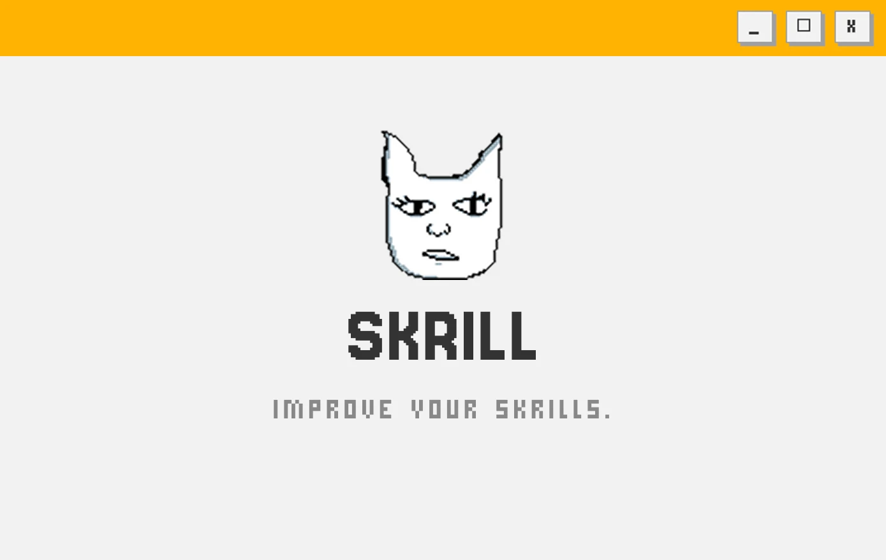
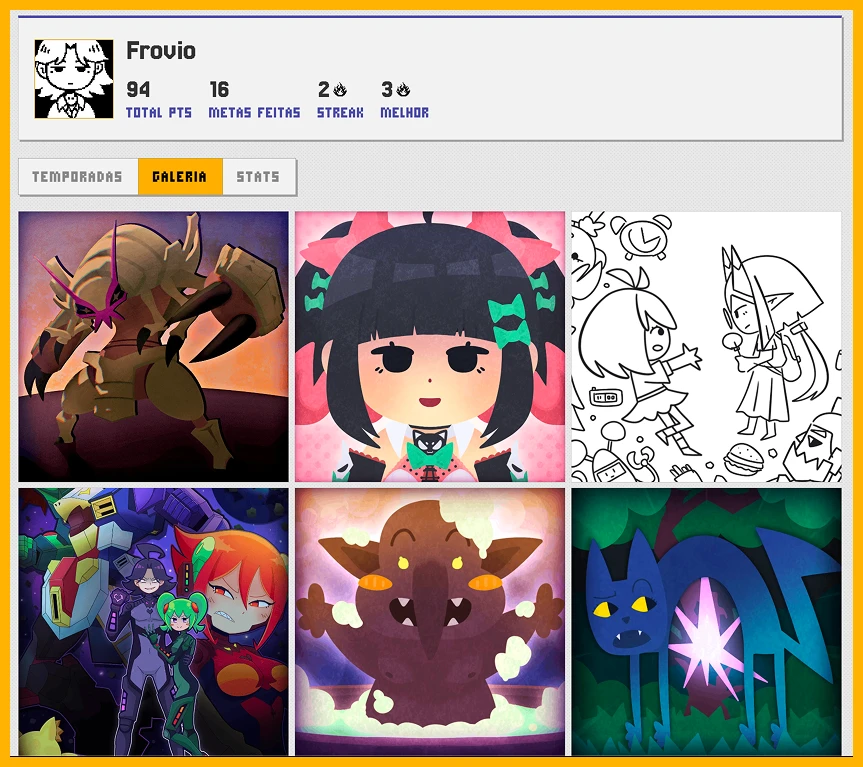

01
skrill
a social productivity system for a small friend group, part habit tracker and part guild dashboard. every season each person declares goals at a difficulty that sets the base points, and progress stays hidden until the weekly meeting, where deliveries get revealed and the group splits a shared bonus pool between each other's work. i designed the points economy, built the whole stack solo and made a silly mascot.

cover.webp

skrill-vid.webp

mockup.webp

profile-gallery.webp

add-goal.webp

leader-board.webp